Peer Educator
Led initiatives at school as the Peer Educator under Adolocent Peer Educators Leadership Program by Central Board of Secondary Education.
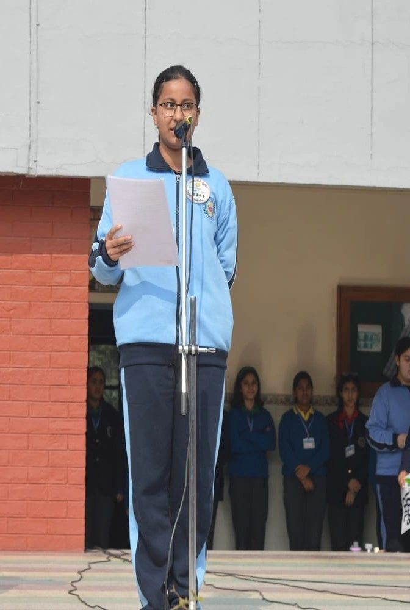
 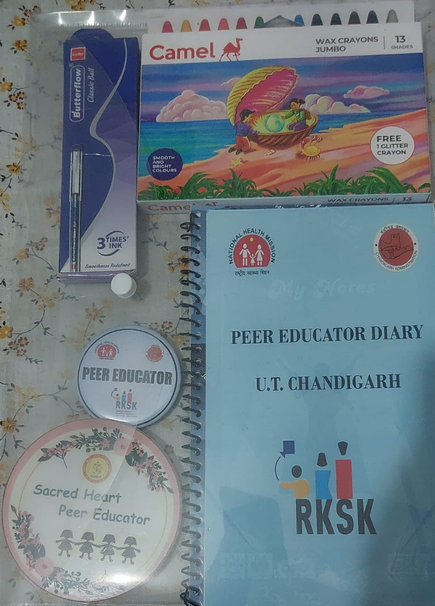
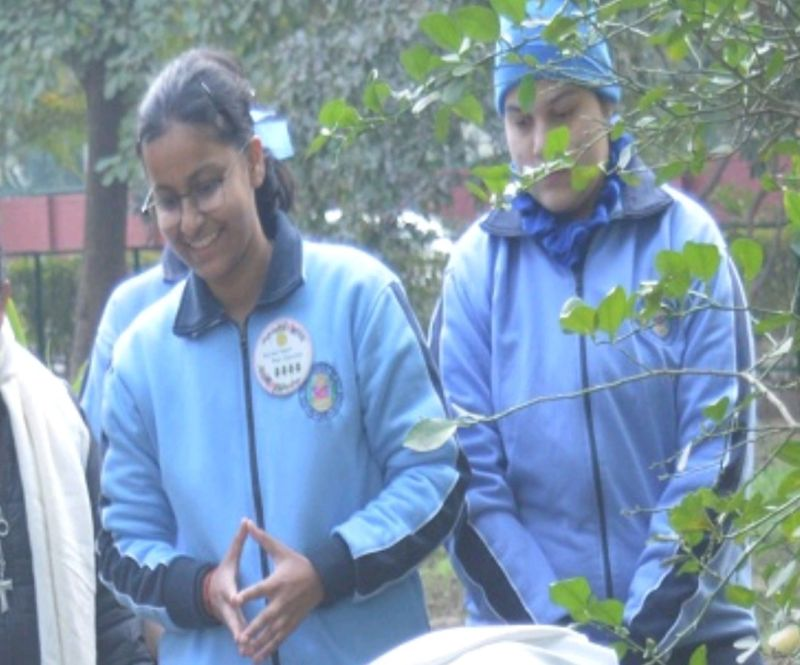
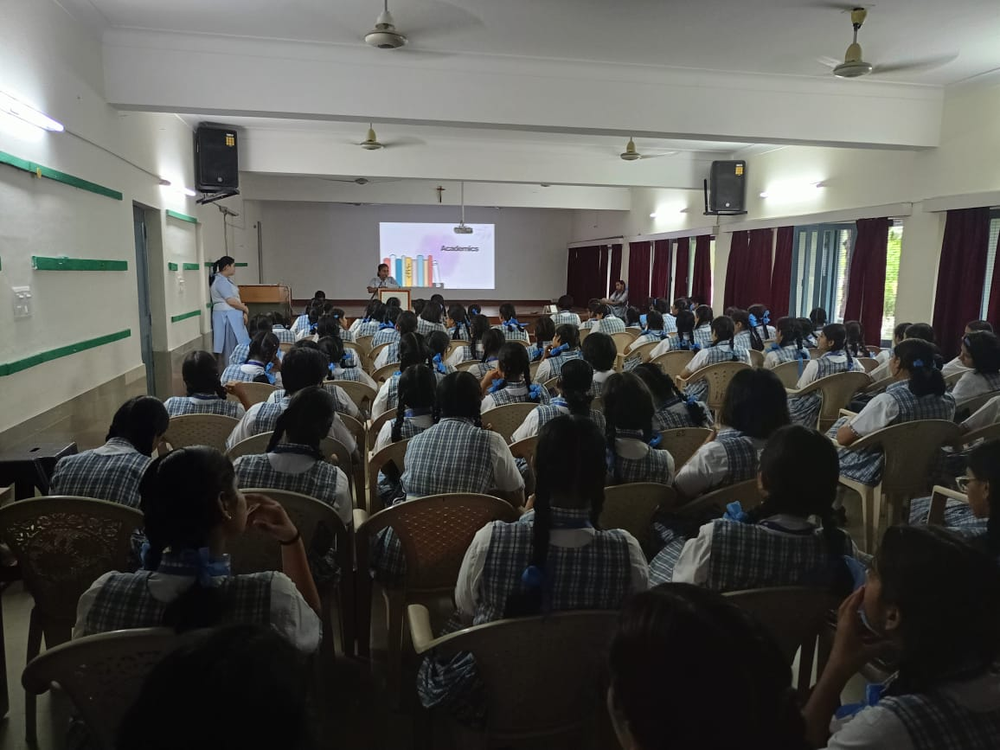
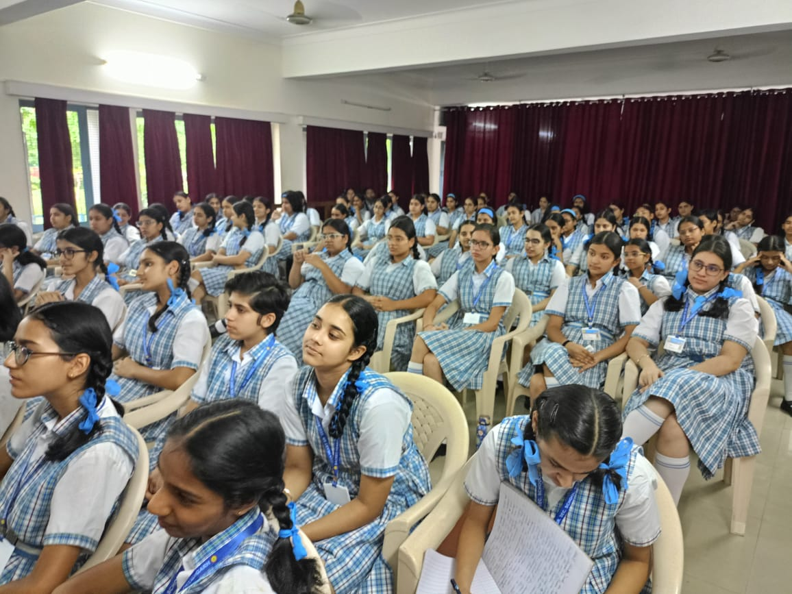
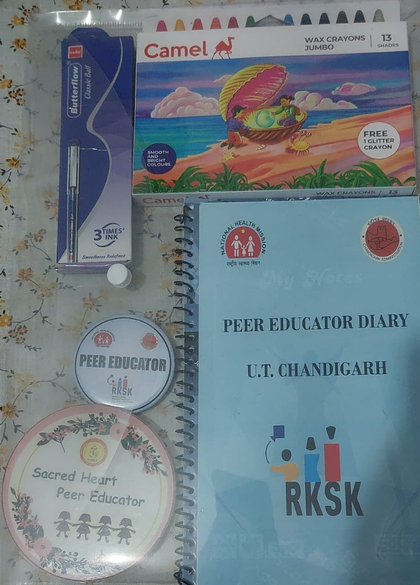
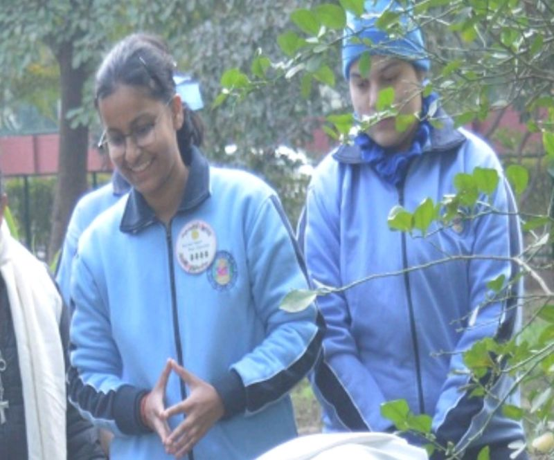
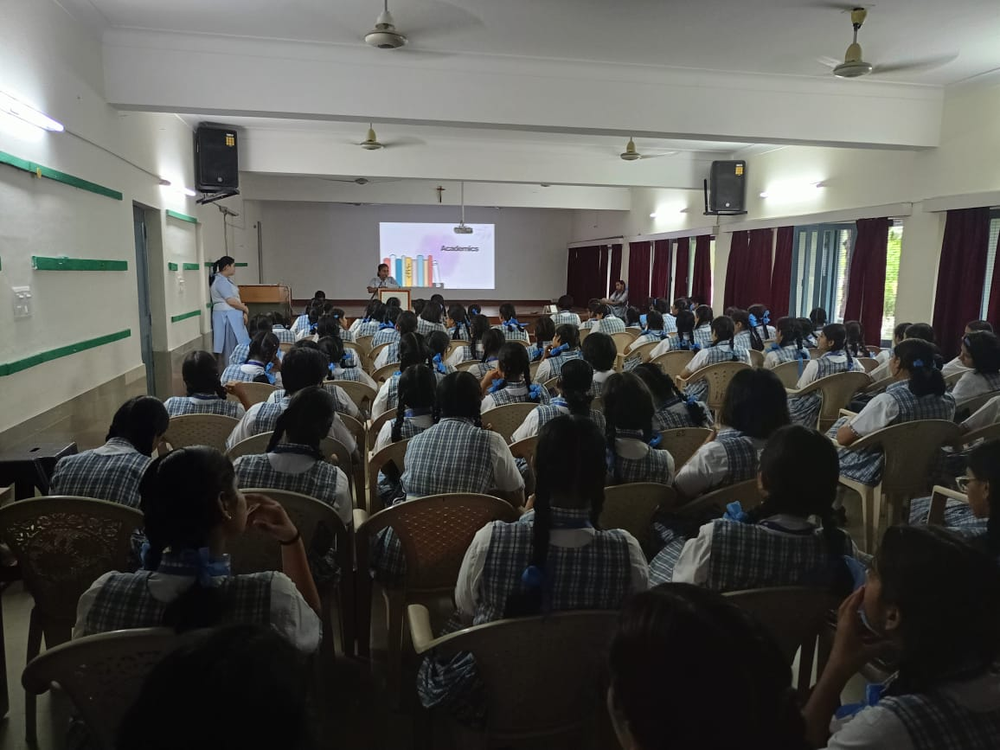
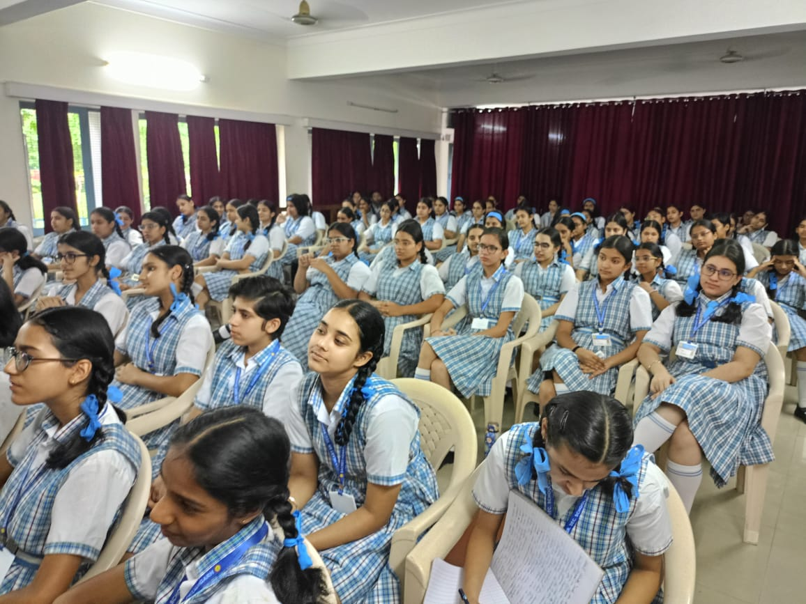
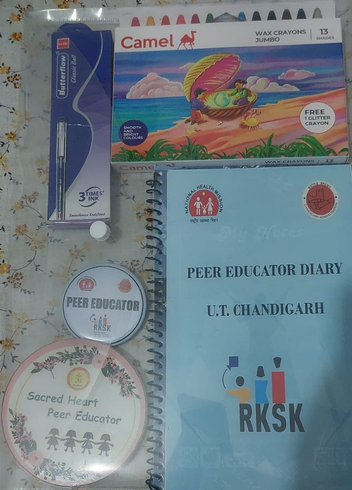
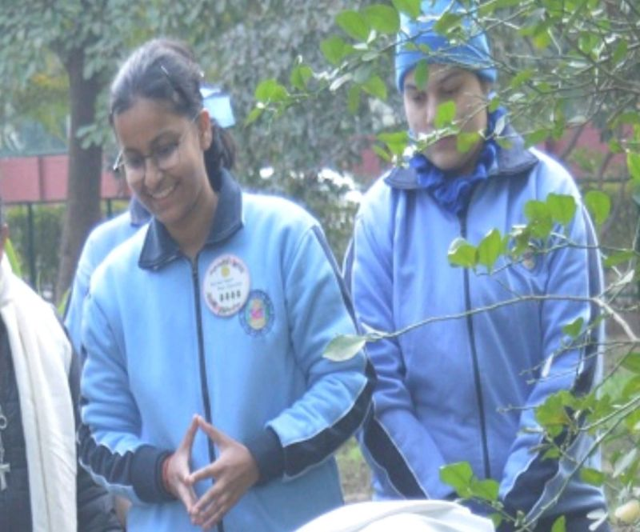
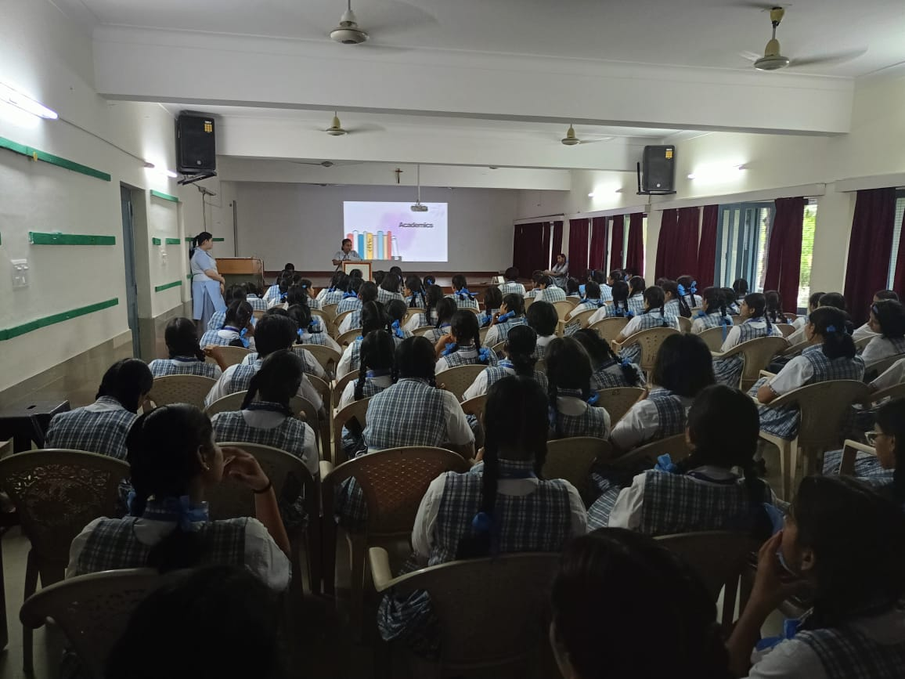
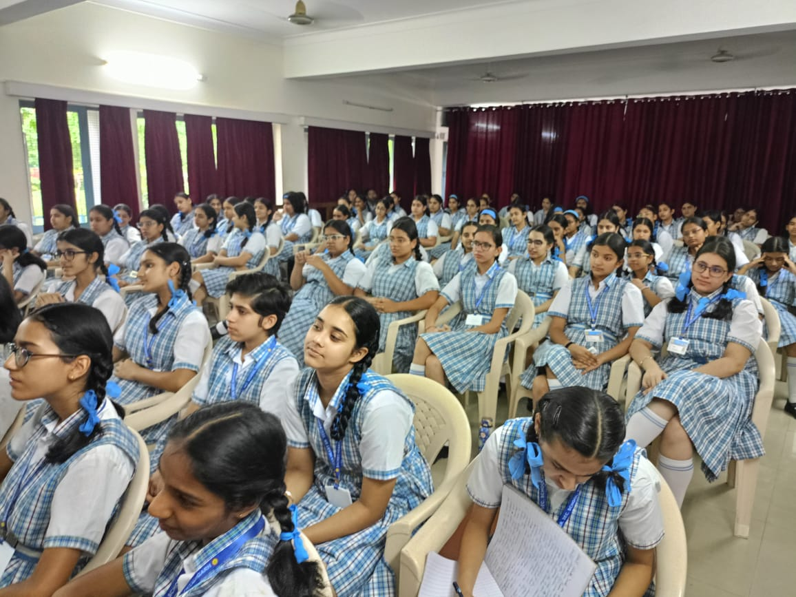
Mentored students (Grades 6-12) weekly, addressing academic and personal challenges through structured seminars and awareness sessions.
Key Initiatives:
- Safety Awareness:Conducted sessions on Women Helpline (181) and Childline (1098), educating students on emergency support for women and children. Real-life scenarios illustrated their importance, empowering students to seek and spread awareness.
- Health & Well-Being: Trained in holistic health, substance abuse, mental health, anaemia, and hygiene at Sector 16 Hospital, Chandigarh. Conducted eye and haemoglobin tests for early detection. Organized an eye check-up camp at Sacred Heart Sr. Sec. School, ensuring smooth coordination and accurate screenings.
- Mental Health & Exam Readiness: Led a session on exam stress management, equipping students with revision strategies, stress-coping techniques, and a growth mindset to overcome fear and self-comparison.
- Social Awareness & Inclusivity: Participated in a Transgender Awareness Camp at SD College, Chandigarh, educating students on legal rights, self-identity recognition, and inclusivity. Advocated for Anti-Discrimination Cells and support groups to foster safe environments.
- Environmental Sustainability: Led a plantation drive on Ashwagandha, educating students on its medicinal, environmental, and stress-reducing benefits.
- Adolescent Development: Hosted a seminar for Classes 9 & 10 on peer pressure, academics, substance abuse, personal growth, and parent-child relationships. Encouraged open discussions on self-acceptance, informed decision-making, and balance.
- Empowerment & Autonomy: Led a discussion on "My Body, My Rules," emphasizing bodily autonomy, consent, and personal freedom.
Through these initiatives, I fostered awareness, inclusivity, and personal growth, empowering students to make informed choices.